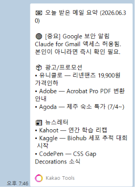

고등학교 교사를 위한
1일차 · 2차시 — 직접 써보면서 배우는 프롬프트 엔지니어링
오늘의 일정
이론을 최소화하고 실습 중심으로 진행합니다. ★ 표시 항목은 시간이 부족할 경우 생략 가능합니다.
강의
처음 열면 메뉴가 많아 당황할 수 있습니다. 수업에서 쓸 메뉴 4가지만 파악해 두면 충분합니다.
업무 유형별로 대화를 묶어 두는 폴더입니다. 프로젝트마다 "지침(Instructions)"을 저장할 수 있어, 매번 역할을 설명하지 않아도 됩니다.
클로드가 만든 결과물(표·웹페이지·코드 등)이 오른쪽 패널에 따로 펼쳐지는 기능입니다. 텍스트와 결과물을 분리해서 볼 수 있습니다.
클로드가 직접 계산·분석·파일 변환을 실행하는 기능입니다. 단순한 텍스트 생성이 아니라 실제 연산 결과를 보여줍니다. PDF 파일도 만들 수 있습니다.
대화가 끝난 후에도 클로드가 중요한 내용을 기억합니다. 다음 대화를 새로 시작해도 이전에 알려준 정보를 유지합니다.
담임업무로 입력해봅니다. (지침 설정은 이따가 함께 합니다)
강의
claude.ai에 접속하면 보이는 세 영역을 살펴봅니다.
안녕하세요, 저는 OO고 수학 교사입니다.를 입력해 보세요. 강의
Claude Sonnet은 속도와 품질의 균형이 뛰어나 교원 업무에 적합합니다. 긴 공문이나 상세한 분석이 필요할 때는 Claude Opus를 활용하면 더 깊은 분석이 가능합니다.
마음에 들지 않는 답변은 재생성 버튼으로 즉시 재생성할 수 있습니다. '계속 작성해 줘.'를 입력하면 내용을 이어서 생성하며, '3번 항목만 더 구체적으로 수정해 줘.'처럼 부분 수정도 가능합니다.
PDF, 이미지, Word 파일을 첨부하면 클로드가 내용을 읽고 분석합니다. 학교 규정집 PDF를 업로드하고 '3장 내용을 요약해 줘.'처럼 활용할 수 있습니다.
강의
같은 요청도 작성 방식에 따라 결과물의 완성도가 크게 달라집니다.
강의
좋은 프롬프트의 4가지 재료(역할·맥락·형식·제약)를 단계별로 조립하는 실전 프레임워크입니다.
달성할 목표 + 역할을 제시합니다.
학교·업무 배경을 설명합니다.
형식과 제약 조건을 요청합니다.
결과를 검토하고 수정을 지시합니다.
강사 시연
G·E·A 세 단계를 한 프롬프트에 조립한 뒤 R(Review)로 수정하는 전 과정을 실제로 보여드립니다.
선생님 실습
협조 요청, 긴급 공지, 일정 안내 상황에 맞는 100자 이내 문자 메시지를 빠르게 완성합니다. (claude.ai 웹 사용)
상황 유형과 내용만 입력하면 날짜·조치 사항·문의처가 포함된 간결한 안내 문자가 완성됩니다.
다음 상황에 맞는 학부모 안내 문자를 작성해 줘.
상황 유형: [협조 요청 / 긴급 공지 / 일정 안내 중 선택]
상황 내용: [예: 내일 방송부 학생 오전 8:30 조기 등교
/ 태풍으로 내일 임시 휴업
/ 급식 메뉴 변경 안내]
수신 대상: [해당 학생 학부모 / 전교생 학부모]
조건: 100자 이내, 날짜·조치 사항·문의처 포함, 공식적이고 간결하게 작성해 줘.
[방송부] 내일(6/14) 행사 준비로 방송부 학생은 오전 8:30까지 등교해 주시기 바랍니다. 문의: 담임 010-0000-0000
[긴급] 태풍 영향으로 내일(6/15) 전교생 임시 휴업을 결정하였습니다. 가정 지도 부탁드립니다. 교무실 000-0000
선생님 실습
4요소가 모두 포함된 프롬프트를 복사해 클로드에 바로 붙여넣어 봅니다.
당신은 10년 차 고등학교 기획부장 교사입니다. 우리 학교는 학생 720명 규모의 특성화고이며, 내년도 학생 진로 탐방 사업을 기획 중입니다. 사업 목적 / 대상 및 인원 / 추진 일정 / 예산 항목을 포함한 A4 1장 기안문 형식으로 작성해 줘. 예산은 200만 원 이내, 분량은 800자 이내로 제한해 줘.
'3번 항목을 더 구체적으로 써 줘.'선생님 실습
각 프롬프트를 복사해 클로드에 바로 붙여넣어 결과물을 확인합니다.
학생별 활동 키워드만 바꾸면 반복 사용이 가능합니다. 30명 세특을 30분 내 완성할 수 있습니다.
당신은 화학 교사입니다. 다음 학생의 활동 내역을 바탕으로 교과 세특 문구를 작성해 줘. - 교과: 화학 I 학년: 1학년 - 단원: 이온결합 - 성취기준: [해당 성취기준 코드] - 학생 활동 키워드: 실험 설계, 팀 토론, 보고서 작성 - 특이 사항: 실험 설계에서 창의적인 방법을 제안하고 팀을 이끔 조건: 200자 이내 / 수동태 금지 / 구체적 행동 서술 / 교과 역량 중심으로 작성해 줘.
교과별 성취기준이 자동으로 반영되어 평가 기준의 일관성이 확보됩니다.
고1 통합사회 프로젝트 수행평가 루블릭을 다음 조건으로 만들어 줘. - 평가 과제: 지역사회 문제 탐구 보고서 작성 - 평가 요소: 내용 이해 / 자료 활용 / 표현력 - 성취 수준: 매우잘함 / 잘함 / 보통 / 노력요함 (4단계) 각 수준별 기술어를 명확하고 구체적으로, 교사와 학생이 모두 이해할 수 있도록 표 형식으로 작성해 줘.
한 번 요청으로 3가지 버전이 동시에 생성됩니다. 학습 격차 해소 활동지에 활용하세요.
영어 관계대명사 단원을 대상으로 수준별 활동지를 만들어 줘. 학습 목표: 관계대명사 who, which, that의 쓰임을 이해하고 문장에서 활용할 수 있다. 다음 3가지 수준으로 각각 A4 1장씩 만들어 줘. - 상: 심화 탐구 + 서술형 문항 포함 - 중: 기본 개념 확인 + 단답형 - 하: 핵심 내용 채우기 + 예시 중심 각 활동지에는 읽기 자료와 형성평가 문제를 각각 포함해 줘.
엑셀에서 번호 + 특성 칸만 복사해(이름 제외) claude.ai에 붙여넣고 아래 프롬프트를 함께 보냅니다. 결과를 "번호 | 행동특성" 표로 받아 엑셀에 붙여넣습니다. 학생이 많으면 10명씩 끊어서 진행합니다.
↓ 실습용 샘플 엑셀 내려받기 (행동특성_실습_샘플.xlsx)아래 데이터는 탭으로 구분된 학생별 정보입니다. 번호가 바뀌면 새 학생입니다. 다음은 우리 반 학생들의 활동 키워드입니다. 각 학생의 행동특성 및 종합의견을 작성해 줘. [형식] - 학생마다 3~4문장, 300~500자, 모든 문장 '~함' 종결, 공식적·객관적 어투 - 학습태도 → 교우관계 → 특기 순서 [조건] - 구체적 관찰 사례 포함, 부정적 내용은 발전 가능성과 함께 서술 - 학생마다 표현과 어휘를 다르게 하여 문구가 겹치지 않게 - 결과를 "번호 | 행동특성 및 종합의견" 표로 정리해 줘 [학생 데이터] 1 | 수업 집중도 높고 과제 성실 | 친구들과 두루 원만 | 수학 경시 입상 2 | 끈기 있게 끝까지 | 협동 활동 적극 | 농구 등 체육 특기 (번호·특성 칸을 끝까지 붙여넣기)
1 | 평소 수업에 성실히 참여하며 맡은 과제를 끝까지 책임지는 태도가 돋보임. 수학 교과에서 우수한 문제 해결력을 보이며 교내 경시대회에서 성과를 거둠. 친구들과 두루 원만하게 지내며 또래를 돕는 배려심이 있음. 2 | 어떤 활동이든 끈기 있게 끝까지 해결하려는 자세가 인상적임. 모둠 활동에서 협동적으로 참여하며 분위기를 이끎. 농구 등 체육 활동에 특기를 보여 체육대회에서 반을 대표함.
선생님 실습
시간 여유가 있을 때 진행합니다. Claude가 만든 내용을 카카오톡으로 바로 받을 수 있습니다.
Claude가 Gmail을 직접 읽고 요약한 뒤, 카카오톡 나와의 채팅으로 바로 전송합니다. 출근 전·퇴근 후 빠르게 메일을 파악할 때 유용합니다.
📱 실제 전송 결과 예시

Gmail 메일 요약 → 카카오톡 나와의 채팅 자동 전송 결과
1일차 마무리
아래 4가지를 기억하면 업무 효율이 달라집니다.